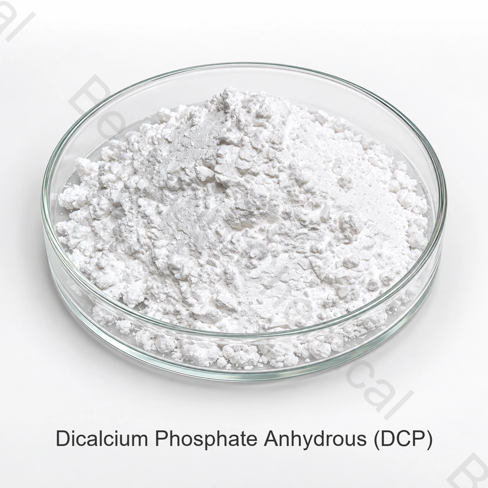

Марка и форма
Укажите точную форму, вид животных, категорию корма, количество, упаковку и место назначения.
Кормовой ингредиент · Источник кальция и фосфора · DCP
Дикальцийфосфат кормового качества — источник кальция и фосфора для рационов животных. Безводная форма и дигидрат различаются по идентичности и аналитическому базису; закупка осуществляется по спецификации выбранной формы.
Укажите форму продукта, вид животных, категорию корма, количество, место назначения и необходимые документы.

Образец безводного DCP. Уточните требуемую гидратную форму в закупочной спецификации.
Кратко о продукте
Дикальцийфосфат кормового качества — источник кальция и фосфора для рационов животных. Безводная форма и дигидрат различаются по идентичности и аналитическому базису; закупка осуществляется по спецификации выбранной формы.
Выбор марки зависит от вида животных, возраста, состава рациона, предполагаемой функции и условий применения. Дозировку определяют для конкретной рецептуры.
Руководство для закупщика
Сопоставьте форму, спецификацию, документы и условия поставки для предлагаемой марки.
Укажите точную форму, вид животных, категорию корма, количество, упаковку и место назначения.
Запросите спецификацию выбранной марки и предложение с условиями Incoterms и требуемым сроком поставки.
Опишите назначение ингредиента, состав смеси, процесс дозирования и переработки.
Запросите аналитические методы, COA, SDS, сведения о происхождении и прослеживаемости выбранной марки.
Предварительная оценка применений
Применение оценивают для конкретной рецептуры и допустимых условий использования.
Укажите требуемый вклад кальция и фосфора в готовый рацион.
Согласуйте водную форму, размер частиц и требования к распределению в смеси.
При подборе компонентов для буферных или электролитных рецептур отдельно оценивают требуемую функцию; источник кальция и фосфора не означает автоматическую замену других солей.
Учитывайте вид животных, возраст и общий минеральный состав рациона.
Технический отбор
Различайте безводный DCP и дигидрат; укажите соответствующую идентичность в спецификации.
Сопоставьте аналитический базис и данные по питательной ценности, не заменяя результаты COA теоретическим расчётом.
Согласуйте пределы примесей, размер частиц и сыпучесть для вашего процесса.
Оцените суммарные кальций и фосфор и требования целевого рынка до утверждения рецептуры.
Техническая документация по запросу
Для этой марки числовая спецификация на странице не приведена. Запросите актуальный документ с методами испытаний и критериями приёмки для выбранного продукта.
Запросите спецификацию или TDS, SDS, аналитические методы, образец COA и COA партии.
Сопоставьте сведения об источнике, прослеживаемости, безопасности кормов, происхождении и производственной площадке для выбранной марки.
См. Обзор кормовых добавок EFSA и Информация о процедуре разрешения. Условия применения определяются требованиями конкретного целевого рынка.
Условия применения: Химическая идентичность и техническая функция сами по себе не означают разрешение для всех животных, категорий кормов и рынков. Условия использования согласуют специалисты по питанию и нормативным требованиям.
Хранение и обращение
Вопросы закупки
Дикальцийфосфат кормового качества — источник кальция и фосфора для рационов животных. Безводная форма и дигидрат различаются по идентичности и аналитическому базису; закупка осуществляется по спецификации выбранной формы.
CAS 7757-93-9 относится к безводному гидрофосфату кальция. Для дигидрата необходима отдельная идентификация; содержание кальция и фосфора сравнивают на согласованном базисе.
Запросите актуальную спецификацию или техническое описание (TDS), методы испытаний и образец сертификата анализа (COA). Для приёмки конкретной партии нужны её результаты и согласованные критерии.
Запросите паспорт безопасности (SDS), сведения о происхождении и прослеживаемости, а также применимые документы по безопасности кормов и качеству для выбранной марки и производственной площадки.
Укажите форму и требуемые показатели, вид животных, категорию корма, назначение, количество, упаковку, целевой рынок, документы, Incoterms и требуемую дату поставки.
Связанные разделы
Сравните минеральные источники, аминокислоты, подкислители, носители и другие кормовые ингредиенты.
Обсудите актуальную спецификацию, документы, образцы и коммерческие требования.
Поддержка выбора источника и экспортной поставки кормовых ингредиентов.
Кормовой ингредиент по согласованной спецификации
Укажите требуемую форму, виды животных, категорию корма, назначение, количество, упаковку, место назначения и необходимые документы.